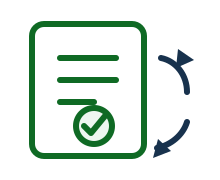
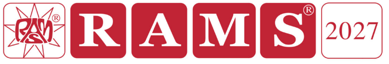

Avantage membre

Formation continue
Rabais 100 $ CA / 4 h
Rabais membre de 100 $ CA par bloc de 4 heures d’activité locale de formation continue
* Minimum de 10 participants
Avantage membre

Accès au tarif membre du RAMS Symposium
Les membres SRE admissibles peuvent accéder au tarif membre du RAMS Symposium
🎤
Conférences et activités techniques
Présentations techniques, séminaires, midis-conférences et activités collaboratives
Activité du 2 octobre
🏭
Visites industrielles
Visites techniques d’organisations d’ingénierie et d’organisations industrielles
Détails à venir
🌐
Échanges interchapitres
Échanges virtuels et activités conjointes avec Ottawa et d’autres chapitres SRE
🥾
Réseautage, activités sociales et de plein air
Réseautage, 5 à 7 et activités de plein air ou communautaires occasionnelles